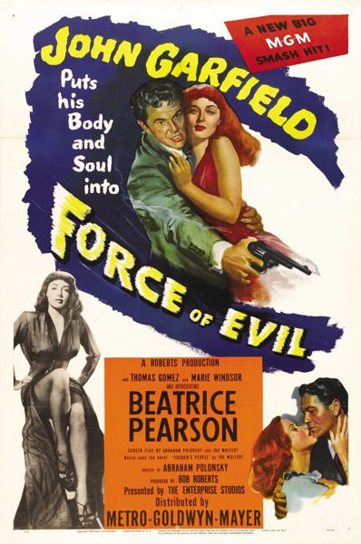
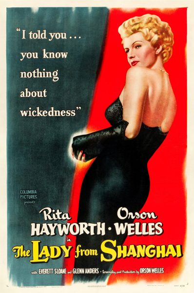
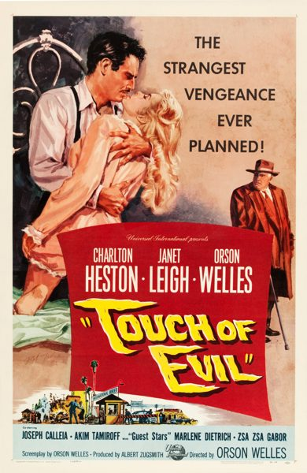

THE STANFORD THEATRE
Now Showing
·
Upcoming
·
Past
·
Search
September 9 - November 10, 2013
The Best of Bogart and Film Noir Classics
10 bills
September 9 - 10
It Started with Eve (1941)
90 min
One Hundred Men and a Girl (1937)
84 min
September 14 - 15
Casablanca (1942)
102 min
The Maltese Falcon (1941)
101 min
September 16 - 22
Casablanca (1942)
102 min
The Maltese Falcon (1941)
101 min
September 26 - 29
To Have and Have Not (1944)
96 min
Out of the Past (1947)
97 min
October 3 - 6
The Big Sleep (1946)
114 min
The Third Man (1949)
93 min
October 10 - 13
Dark Passage (1947)
106 min
The Blue Dahlia (1946)
96 min
October 17 - 20
Treasure of the Sierra Madre (1948)
126 min

Force of Evil (1948)
79 min
October 24 - 27
Key Largo (1948)
100 min

The Lady from Shanghai (1947)
87 min
October 31 - November 3
The Caine Mutiny (1954)
124 min

Touch of Evil (1958)
93 min
November 7 - 10
In a Lonely Place (1950)
94 min
Gun Crazy (1950)
87 min
Archived
•
StanfordTheatre.org Original